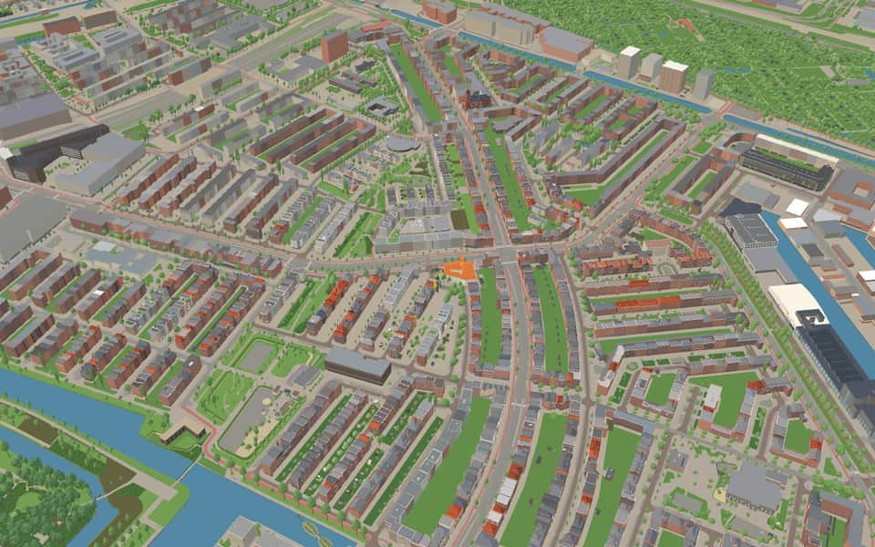
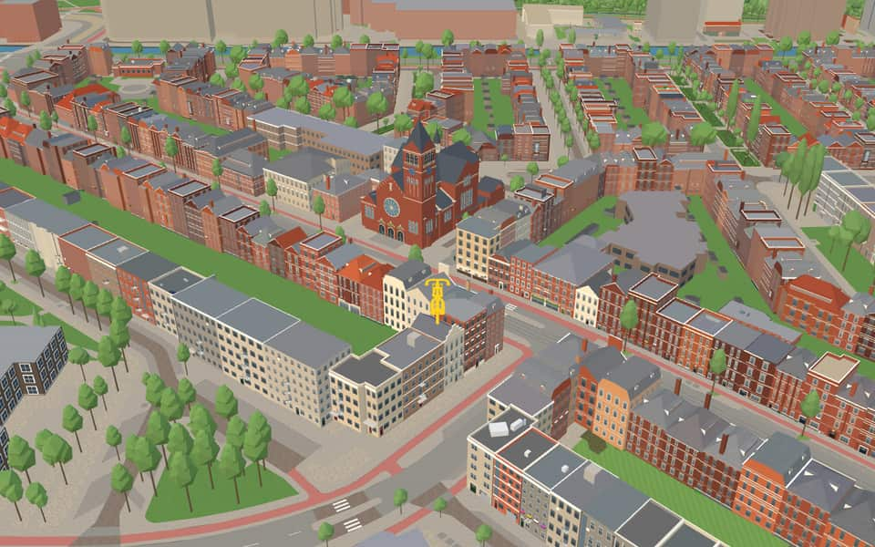
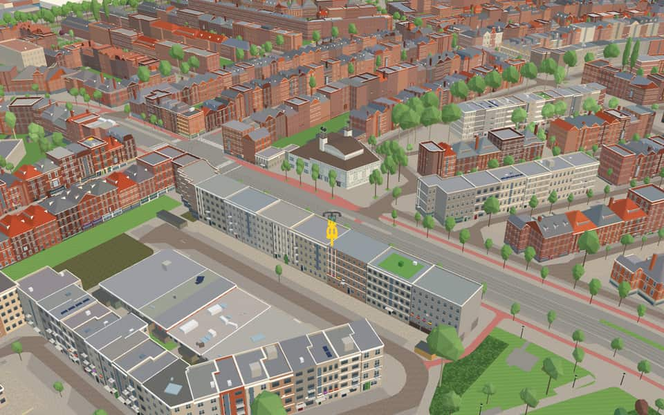
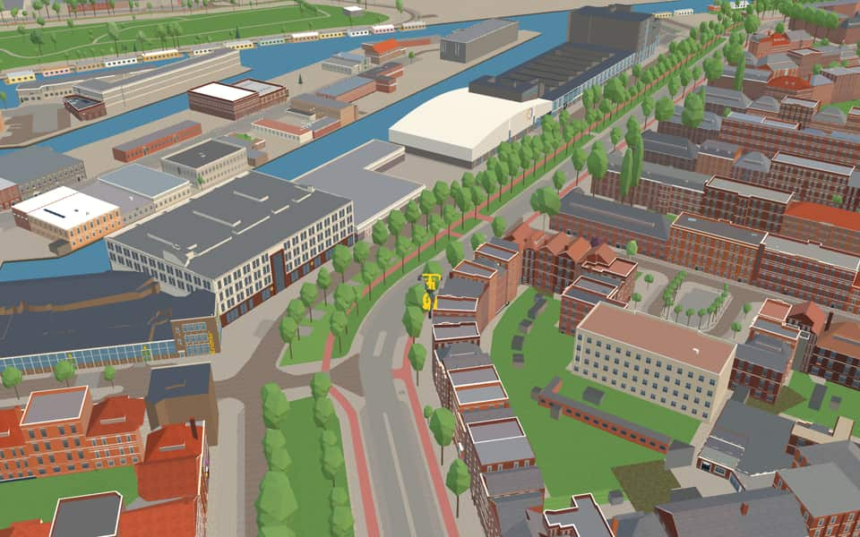

Quarter · Amsterdam
Landlust
Landlust is a neighborhood of Amsterdam, Netherlands. The neighborhood was built before and after World War II. en.wikipedia.org
The name. The name comes from a former farm on the Haarlemmerweg. nl.wikipedia.org
Ride Landlust7 modelled buildings · 17 facts · 56 name stories


In the game
Frames from a ride through Landlust.




6 more photos of Landlust


Built here
Buildings modelled one by one for the ride.
Boomkerk
Podium Mozaïek — former Pniëlkerk
Beest Boulders Amsterdam
- No picture yet
Kesbeke Fijne Tafelzuren
- No picture yet
Kesbeke Zoet & Zuur winkel
- No picture yet
Stadsloket West, Bos en Lommerplein 250, Amsterdam (2003; shops, housing and the stadsdeel office in one pand)
- No picture yet
Willem de Zwijgerlaan 350
Did you know
Trivia the ride can show you here.
- Landlust was the first Amsterdam neighbourhood to use open rows of strip housing, with architect Ben Merkelbach among the pioneers. Wikipedia (translated from Dutch)
- The housing block forming the south side of the Solebayplein dates from 1934–1935. Wikipedia (translated from Dutch)
- That Solebayplein block was designed in Amsterdam School style by Gerrit Jan Rutgers. Wikipedia (translated from Dutch)
- BoomkerkAn African community began holding Sunday afternoon services there. nl.wikipedia.org
- SolebaypleinTrees and shrubs once blocked light, making residents feel unsafe on the square. nl.wikipedia.org
- SolebaypleinArtist Lobke Alkemade previously redesigned squares in Amsterdam-Oost before this project. nl.wikipedia.org
- SolebaypleinAlkemade created an open layout featuring benches and a new work of art. nl.wikipedia.org
- SolebaypleinCourtyard houses feature natural stone entrances that transition into brick near the doors. nl.wikipedia.org
- ErasmusgrachtA helophyte filter near a pumping building features a mural named Zuiver since 2021. nl.wikipedia.org
- ErasmusgrachtSeven distinct bridges span the waterway, including a railway and metro bridge over the Ringspoorbaan. nl.wikipedia.org
- Bos en LommerwegThe New Kit apartment complex has stood at the end of the road since 2012. nl.wikipedia.org
- Bos en LommerwegA Wednesday and Saturday market operated on a side street here until the municipality abolished it in November 2023. nl.wikipedia.org
- Bos en LommerwegA local building known as Theelichtje since 2005 is now called Podium Mozaïek. nl.wikipedia.org
- HaarlemmerwegThe path became the Haarlemmerweg when it was paved in 1762. nl.wikipedia.org
3 more facts
- HaarlemmerwegIn 1839, the first train to ever depart in Dutch history left from a station here. nl.wikipedia.org
- HaarlemmerwegSince 1921, the entire road has belonged to Amsterdam after the municipality of Sloten was annexed. nl.wikipedia.org
- HaarlemmerwegStretching 8.3 kilometers, this road holds the title of Amsterdam's longest street. nl.wikipedia.org
Names on the map
Where the canal, bridge and street names come from.
Canals and water
- ErasmusgrachtDesiderius Erasmus (1467-1536), humanist, who fiercely attacked the abuses in the Roman Catholic Church. His best-known work is 'In Praise of Folly'.
Streets
- Admiraal De RuijterwegMichiel Adriaansz. de Ruyter (1607-1676), the renowned admiral of Holland and West Friesland. He was born in Vlissingen. In Amsterdam he lived on what is now the Prins Hendrikkade.
- Adolf van NassaustraatThe younger brother (1540-1568) of Prince William of Orange. He was killed in the Battle of Heiligerlee against the Spaniards.
- Anna van BurenstraatAnna van Buren (1533-1558), the first wife of Prince William of Orange.
- BaetostraatA tragedy by P.C. Hooft (1581-1647).
- BestevâerstraatAn honorary name given by sailors to Maarten Harpertsz. Tromp, and later to Michiel Adriaansz. de Ruyter. It literally means 'best father'. The street was originally named Wilhelminastraat by the municipality of Sloten (Sloten council decision of 28 June 1911).
- Bloys van TreslongstraatWillem Bloys van Treslong (1529-1594), admiral of Holland and a leader of the Sea Beggars at the capture of Den Briel in 1572.
- Bos en LommerpleinNamed after a farmstead on the former Sloterdijkermeerweg (no. 60), originally eighteenth-century, rebuilt in 1886 and demolished in 1940. The oldest part of the road was originally called Joos Banckersstraat (council decisions of 26 July 1922 and 27 April 1933). Before the GAK building was built, the Adindastraat and the Saidjastraat lay where the Bos en Lommerplantsoen is now (council decision of 20 April 1939).
- Bos en LommerwegNamed after a farmstead on the former Sloterdijkermeerweg (no. 60), originally eighteenth-century, rebuilt in 1886 and demolished in 1940. The oldest part of the road was originally called Joos Banckersstraat (council decisions of 26 July 1922 and 27 April 1933). Before the GAK building was built, the Adindastraat and the Saidjastraat lay where the Bos en Lommerplantsoen is now (council decision of 20 April 1939).
- Charlotte de BourbonstraatThe third wife of Prince William of Orange (1546-1582).
- CoppelstockstraatJan Pieterszoon Coppelstock, the ferryman who helped the Sea Beggars (watergeuzen) take Den Briel on 1 April 1572.
- De RijpgrachtJan Cornelisz de Rijp (1570-1630), navigator, who sailed at the same time as Heemskerk and Barentsz in search of a northern passage, but did not winter on Nova Zembla because he took a route around Spitsbergen. When the street was laid out, the council of the former municipality of Sloten named it Willem Barentsstraat (council decision of Sloten, 8 March 1910).
- De RijpstraatJan Cornelisz de Rijp (1570-1630), navigator, who sailed at the same time as Heemskerk and Barentsz in search of a northern passage, but did not winter on Nova Zembla because he took a route around Spitsbergen. When the street was laid out, the council of the former municipality of Sloten named it Willem Barentsstraat (council decision of Sloten, 8 March 1910).
43 more streets with a story
- DoggersbankstraatA shoal in the North Sea where in 1781 the Dutch admiral Zoutman inflicted a defeat on the British fleet.
- EgidiusstraatThe person addressed in an anonymous medieval lament.
- Gerard CallenburgstraatFleet commander (1642-1722). Captain of Admiral De Ruyter's flagship, he took part in the naval battles of Solebay (1672) and off Etna (1676) and in the capture of Gibraltar (1704).
- GibraltarstraatThe southern tip of Spain, named here for the naval battle against the Spanish in 1607 in which Jacob van Heemskerck was killed.
- GranidastraatA tragedy by P.C. Hooft (1602-1605).
- GrianestraatA tragicomedy by Bredero from 1612.
- Gulden WinckelplantsoenAfter a poem by Vondel from 1613.
- Gulden WinckelstraatAfter a poem by Vondel from 1613.
- HaarlemmerwegThe main road to Haarlem.
- HertspieghelwegA didactic poem by Spieghel (1549-1612), merchant and man of letters.
- HofwijckstraatAn autobiographical work by Constantijn Huygens from 1651. It was also the name of his country house in Voorburg, which still exists.
- Jan den HaenstraatOne of the naval heroes of the Battle of Solebay in 1672. He was killed fighting the French off Palermo in 1676.
- Jan HaringstraatA Sea Beggar from Hoorn who in 1573 held the Diemerzeedijk between the IJ and the Diemermeer (Watergraafsmeer) alone against the Spanish for a time.
- Jan van GalenstraatFleet commander (1604-1653), killed in the Battle of Livorno against the English.
- Jasper LeijnsenstraatThe heroic sailor in a naval battle against the Spanish near Reimerswaal in 1574.
- JephtastraatA tragedy by Vondel, dating from 1659. By council decision of 6 October 1948 the street name was extended southwards, but on 18 February 1970 that stretch was added to the Gulden Winckelplantsoen.
- Joos BanckersplantsoenFleet commander (1599-1647), who had a part in the capture of the Silver Fleet under Piet Hein and in the Battle of the Downs under Cornelis Tromp.
- Joos BanckerswegFleet commander (1599-1647), who had a part in the capture of the Silver Fleet under Piet Hein and in the Battle of the Downs under Cornelis Tromp.
- Joris van AndringastraatA seventeenth-century naval commander, died 1676, and secretary to Admiral Michiel de Ruyter.
- Juliana van StolbergstraatJuliana of Stolberg (1506-1580), wife of William of Nassau and mother of Prince William of Orange. Princess Juliana is named after her.
- Karel DoormanstraatKarel Willem Frederik Marie Doorman (1889-1942), naval officer. During the Second World War he was rear admiral in the Dutch East Indies. In 1942 he was given the impossible task of preventing the Japanese from landing on Java, and was killed in this famous Battle of the Java Sea. The street came onto Amsterdam territory in 1921 under the name Houtmanstraat (council decision of Sloten, 8 March 1910), and by council decision of 22 March 1922 was named Zeven Provinciënstraat, after Admiral De Ruyter's flagship. After some changes to its boundaries (council decisions of 27 April 1933 and 10 June 1936), its present name was set in 1946.
- KijkduinstraatThe former fort south of Huisduinen near Den Helder, known for the naval battle of 1673 in which Admiral De Ruyter defeated the combined Anglo-French fleet.
- Krelis LouwenstraatA comedy by Pieter Langendijk, often performed with success.
- LeeuwendalerswegA pastoral play by Vondel ('Leeuwendalers'), written to celebrate the peace with Spain and performed in the Amsterdam Schouwburg in 1648.
- LippijnstraatA medieval farce (sotternie).
- LivornostraatThe Italian city off which the Dutch naval officer Jan van Galen defeated the English fleet in a naval battle in 1653.
- Louise de ColignystraatFourth wife of Prince William of Orange (1555-1620) and mother of Prince Frederik Hendrik.
- LucellestraatA play by Bredero from 1616, dedicated to Maria Tesselschade.
- MerlijnstraatThe name of a Celtic romance (Merlin), adapted by Jacob van Maerlant in 1260.
- NieuwpoortstraatThe place in Belgium where Prince Maurits defeated the Spanish in 1600.
- Reinaert de VosstraatA medieval beast epic (Reynard the Fox), probably of French origin, adapted into Middle Dutch in 1260. Before 1939 this street was part of the Zeven Provinciënstraat (now Bestevâerstraat).
- Reinier ClaeszenstraatDutch vice-admiral, who in 1606 was attacked by the Spanish fleet off Cape St Vincent (Portugal) and blew up his ship rather than surrender.
- RoelantstraatAfter the Song of Roland, the thirteenth-century epic about Roland, a knight of the Frankish ruler Charlemagne. Before 1939 this street was part of the De Rijpstraat.
- Sara BurgerhartstraatNamed after the heroine of the epistolary novel 'Historie van mejuffrouw Sara Burgerhart' (the history of Miss Sara Burgerhart) by Betje Wolff and Aagje Deken, of 1782.
- SolebaystraatA place on the east coast of England. In the Battle of Solebay (1672) the Holland and Zeeland fleet under Admiral De Ruyter fought the English with success.
- Spaanse BrabanderstraatAfter the comedy 'Spaanschen Brabander' (the Spanish Brabanter) by Gerbrand Adriaensz. Bredero, of 1617.
- Tjerk Hiddes de VriesstraatFrisian admiral (1622-1666), killed in the Second Anglo-Dutch War off Dunkirk.
- TrouringhstraatThe title of a didactic poem by Jacob Cats (the 'Trouringh', wedding ring).
- Van GentstraatWillem J. Baron van Ghent (1626-1672), lieutenant-admiral, who in 1667 sailed up the Thames and captured the English flagship (Chatham). He was killed in the Battle of Solebay in 1672. The street came to Amsterdam in 1921 under the name Piet Heinstraat (council decision of Sloten, 8 March 1910).
- Vier HeemskinderenstraatNamed after the gable stone showing the Four Sons of Aymon (the Vier Heemskinderen) on the corner house of the Herengracht and the Leidsegracht.
- Willem de ZwijgerlaanThe nickname (William the Silent) of Prince William of Orange (1533-1584), also called 'the Father of the Fatherland', son of William of Nassau and Juliana of Stolberg. Because he inherited the principality of Orange, he is the founder of the House of Orange-Nassau.
- Willem LeevendstraatAn epistolary novel by Betje Wolff and Aagje Deken of 1785. The street came over from the former municipality of Sloten in 1921 under the name Prinses Julianastraat (council decision of Sloten, 8 March 1910).
- WiltzanghlaanA poem by Vondel. The Sloten municipality earlier named the first part of the street Zoutmanstraat (council decision of Sloten, 8 March 1910).
1 other street without a recorded story
Adolf van Nassauweg